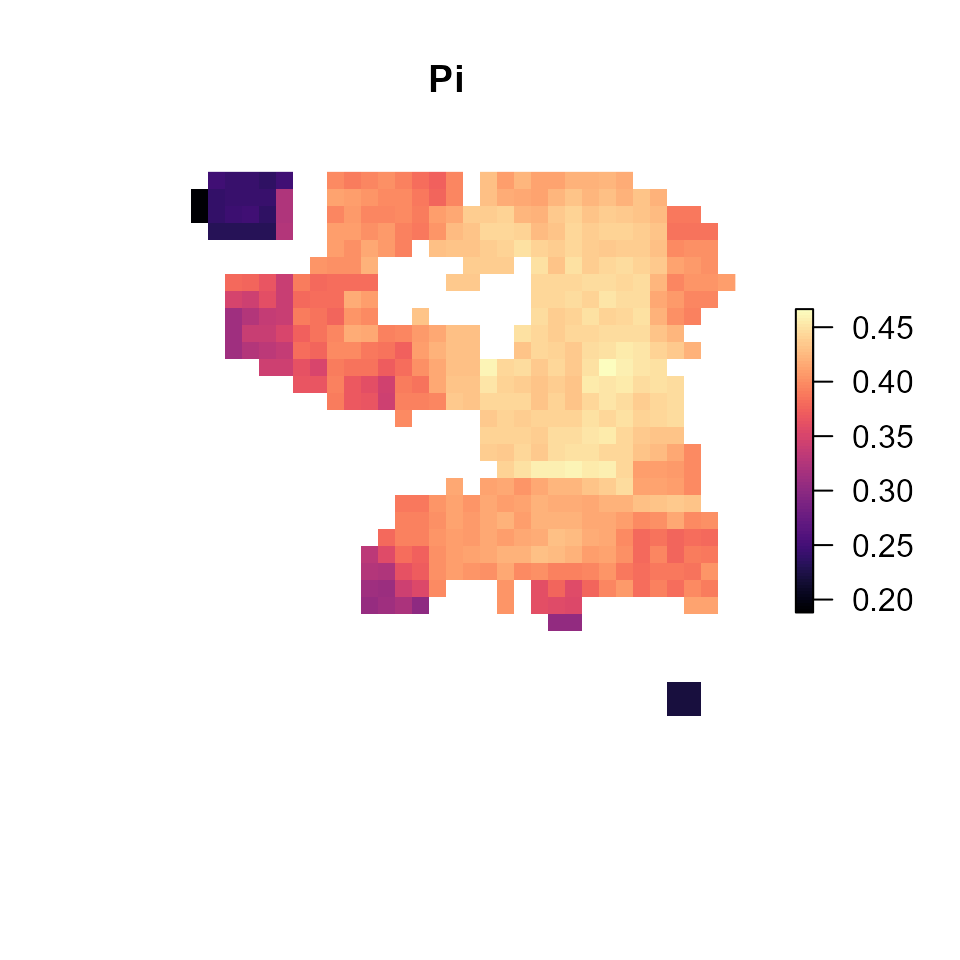
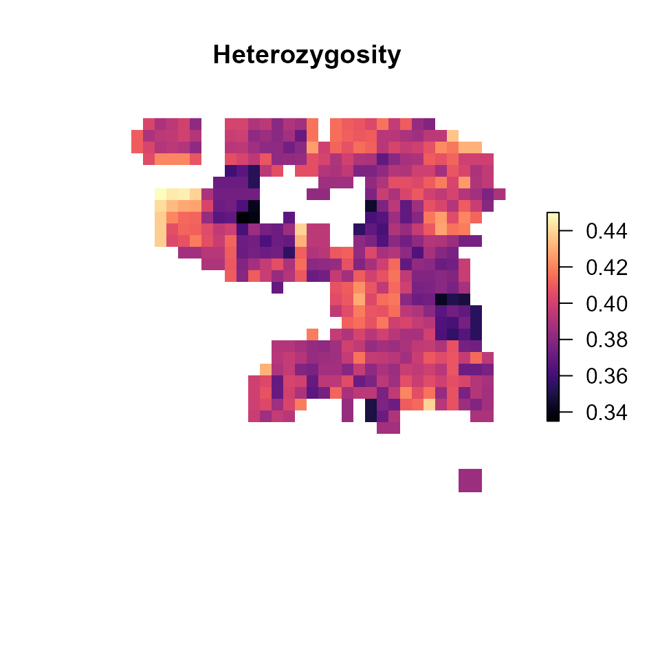
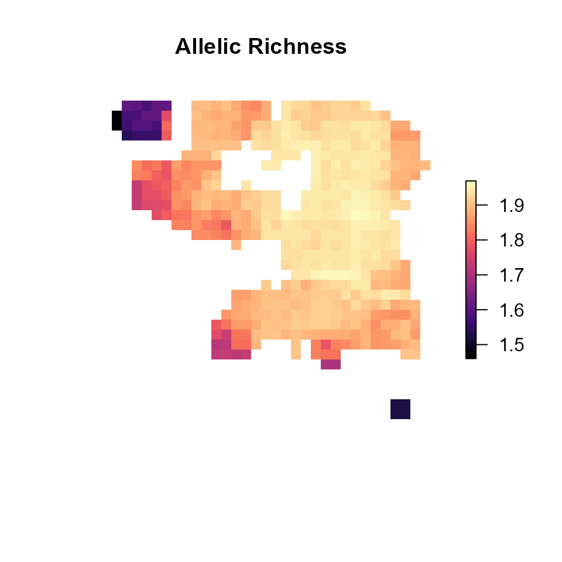

wingen-vignette
wingen-vignette.RmdLoad middle earth example
The middle earth example dataset contains three objects which are loaded by ‘load_middle_earth_ex()’ [Add more detail about this simulation here]
## ------------ middle earth loaded -------------
##
## Added to GlobalEnv:
## vcf vcfR object with (1000 loci x 200 samples)
## coords dataframe with x and y coordinates
## lyr middle earth RasterLayer (100 x 100)
##
## ----------------------------------------------##
# Genetic data
vcf## ***** Object of Class vcfR *****
## 200 samples
## 1 CHROMs
## 1,000 variants
## Object size: 1.7 Mb
## 0 percent missing data
## ***** ***** *****
# Coordinates
head(coords)## x y
## 881 74.829415 -20.565023
## 341 14.052468 -15.425978
## 560 4.126699 -5.332612
## 135 88.893018 -65.835666
## 363 86.545357 -21.280152
## 106 74.171030 -28.331393
# Raster data
lyr## class : RasterLayer
## dimensions : 100, 100, 10000 (nrow, ncol, ncell)
## resolution : 1, 1 (x, y)
## extent : 0, 100, -100, 0 (xmin, xmax, ymin, ymax)
## crs : NA
## source : memory
## names : layer
## values : 0, 1 (min, max)
# Map of data
plot(lyr, col = magma(100), axes = FALSE, box = FALSE)
points(coords, col = mako(1, begin = 0.8), pch = 3, cex = 0.5)
Main functions
Run sliding window calculations
wgd <- window_gd(vcf,
coords,
lyr,
stat = "pi",
fact = 3,
wdim = 5,
rarify = TRUE,
nloci = 1000)## Loading required namespace: adegenet
plot_gd(wgd, main = "Window pi")
plot_count(wgd, main = "Window sample counts")
Krige results
kgd <- krig_gd(wgd, lyr, resample = FALSE)## [using ordinary kriging]## Warning in sqrt(krige_result$var1.var): NaNs produced## [using ordinary kriging]## Warning in sqrt(krige_result$var1.var): NaNs produced
plot_gd(kgd, main = "Kriged pi")
plot_count(kgd, main = "Kriged sample counts")

Parallelization
system.time(wgd <- window_gd(vcf,
coords,
lyr,
stat = "pi",
fact = 3,
wdim = 5,
rarify = TRUE,
nloci = 1000))## Loading required namespace: adegenet## user system elapsed
## 10.25 0.33 10.78
cores <- 5
cl <- makeCluster(cores)
registerDoParallel(cl)
system.time(
wgd <- window_gd(vcf,
coords,
lyr,
stat = "pi",
fact = 3,
wdim = 5,
rarify = TRUE,
nloci = 1000,
parallel = TRUE)
)## user system elapsed
## 0.93 0.05 11.94
stopCluster(cl)Other genetic diversity metrics
pi_wgd <- window_gd(vcf,
coords,
lyr,
stat = "pi",
fact = 3,
wdim = 5,
rarify = TRUE,
nloci = 1000)
het_wgd <- window_gd(vcf,
coords,
lyr,
stat = "het",
fact = 3,
wdim = 5,
rarify = TRUE)
AR_wgd <- window_gd(vcf,
coords,
lyr,
stat = "biallelic.richness",
fact = 3,
wdim = 5,
rarify = TRUE)
plot_gd(pi_wgd, main = "Pi")
plot_gd(het_wgd, main = "Heterozygosity")
plot_gd(AR_wgd, main = "Allelic Richness")